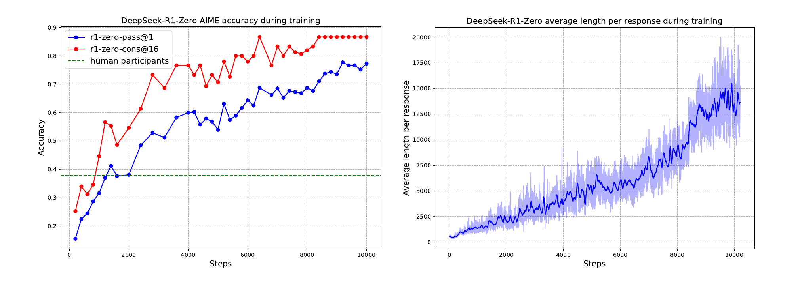
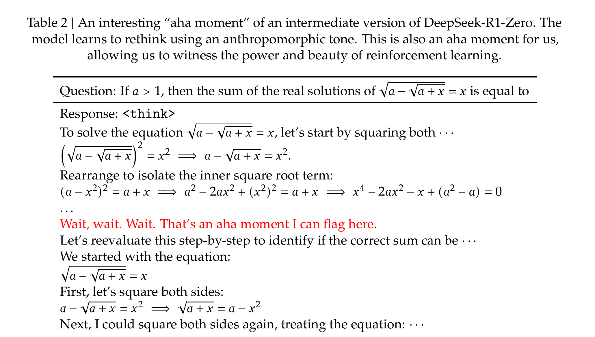
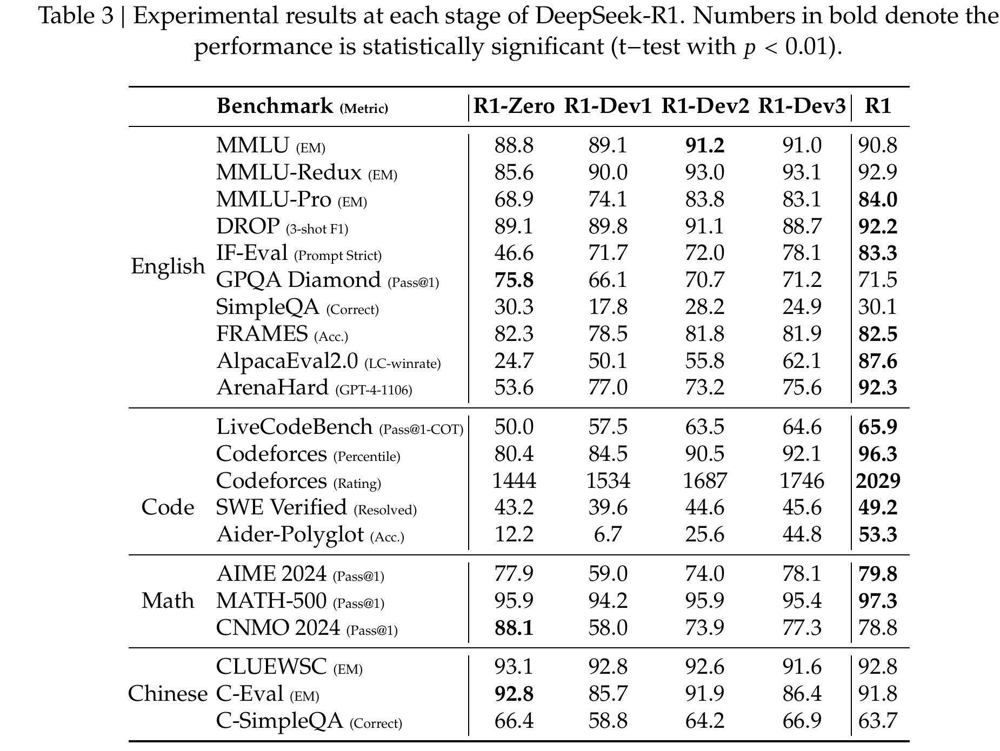
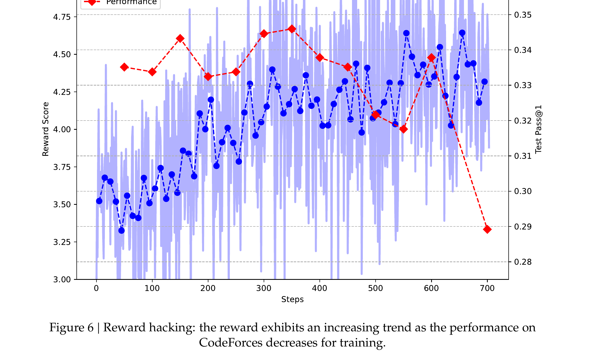
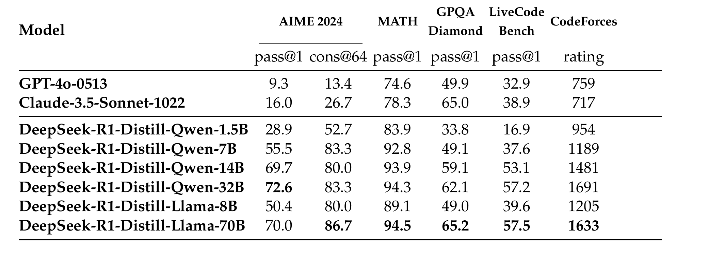
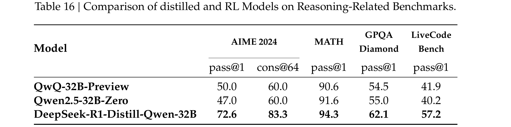

DeepSeek-R1
in LLMs via Reinforcement Learning Dhruv Kumar · BITS Pilani
Can reasoning emerge from RL alone, without SFT first?
Chain-of-thought prompting and SFT on human-written reasoning traces both work — but both are capped by what humans demonstrate, and don't scale past human-annotated data. DeepSeek-AI (2025) ask a sharper question: starting from a plain pretrained base model, with no supervised reasoning examples at all, can pure RL alone teach a model to reason?
Train directly on DeepSeek-V3-Base with GRPO (the algorithm from DeepSeekMath), using a reward based only on whether the final answer is correct — no human reasoning demonstrations, no learned reward model. The resulting model is DeepSeek-R1-Zero.
GRPO, unchanged from DeepSeekMath
$G$ — group size; $o_i$ — the $i$-th sampled response to prompt $q$; $A_i$ — its group-relative advantage, from rewards $\mathbf r=\{r_1,\dots,r_G\}$; $\varepsilon,\beta$ — clip range and KL strength. One change from DeepSeekMath's formula: the ratio here is sequence-level ($\pi_\theta(o_i\mid q)$, one ratio per full response), not token-level.
The reward: purely rule-based, no learned model
Accuracy reward — checks the final answer directly: exact match for math
(given in a specified box format), compiler/test-case execution for code. Format
reward — checks that the reasoning process is wrapped in
<think></think> tags. Both are deterministic and automatic — this is
RLVR (verifiable rewards), the same paradigm from the RL foundations deck, applied at scale.
The paper explicitly avoids neural reward models here: they are susceptible to reward hacking during large-scale RL, and retraining them adds substantial compute and pipeline complexity. A later slide shows exactly what that reward hacking looks like.
Verified: from two reward signals to one advantage
| rollout | accuracy | format | combined reward | advantage |
|---|---|---|---|---|
| 1 (correct, tagged) | 1 | 1 | 2 | +1.2247 |
| 2 (correct, no tags) | 1 | 0 | 1 | 0.0000 |
| 3 (wrong, tagged) | 0 | 1 | 1 | 0.0000 |
| 4 (wrong, no tags) | 0 | 0 | 0 | −1.2247 |
Confirmed by direct computation: mean $=1.0$, sample std $=0.8165$, giving advantages $\pm1.2247$ and $0$. Rollouts 2 and 3 land exactly on the group average — despite being very different failures (one nailed the answer but skipped formatting, the other did the opposite) — so neither gets any gradient signal from this batch alone.
R1-Zero: AIME accuracy climbs, and so does thinking time

Pass@1 on AIME 2024 climbs from 15.6% to 77.9% during RL training — purely from the correctness reward, no reasoning demonstrations. With self-consistency (16 samples), it reaches 86.7%. At the same time, and with no explicit incentive to do so, the model's average response length keeps growing — it is teaching itself to think longer.
The "aha moment"

A real, unedited model response. Midway through one algebraic approach, the model interrupts itself — "Wait, wait. Wait." — and restarts with a cleaner method. No one taught it to do this explicitly; self-reflection and backtracking emerged purely from optimizing the correctness reward over many rollouts.
Two problems with R1-Zero
Nothing in the reward asks for human-friendly output — only for correctness and the presence of think-tags. The reasoning traces can be a chaotic stream that a person struggles to follow.
DeepSeek-V3-Base is trained on both English and Chinese. With nothing in the reward constraining language, a single response can freely switch between English and Chinese mid-reasoning.
R1-Zero is also narrowly focused — trained only on reasoning-domain rewards, it does not generalize well to writing or open-domain question answering. Fixing all of this is what motivates DeepSeek-R1's full multi-stage pipeline.
DeepSeek-R1: a four-stage pipeline
![Diagram from the DeepSeek-R1 paper showing the full training pipeline: DeepSeek-V3-Base trained with RL on reasoning prompts becomes DeepSeek-R1-Zero; its outputs are filtered and refined into cold-start long-CoT data; DeepSeek-V3-Base is SFT-tuned on this to become DeepSeek-R1-Dev1; RL with rule-based and language-consistency rewards produces DeepSeek-R1-Dev2; its outputs plus DeepSeek-V3 non-reasoning data are used to SFT DeepSeek-V3-Base again into DeepSeek-R1-Dev3; a final RL stage with rule-based and preference rewards produces DeepSeek-R1.](images/fig2_pipeline.png)
Four stages, each fixing a specific gap in the last: cold-start SFT for readability, reasoning RL for capability, rejection-sampling SFT to broaden beyond reasoning, and a final RL pass to align with human preferences. The next slides walk through each.
Stage 1: cold-start SFT for readability
A small set — thousands of examples, not millions — of long chain-of-thought data with a human-friendly, conversational structure, collected via: few-shot prompting with long-CoT examples, directly prompting the model for detailed answers with reflection and verification, and manually post-processing R1-Zero's own outputs.
DeepSeek-V3-Base is SFT-tuned on this small set to produce DeepSeek-R1 Dev-1 — a model with much better readability and instruction-following (measured later on IF-Eval and ArenaHard), that also serves as a better starting point for the RL stage that follows, rather than starting RL from a completely raw base model.
Stage 2: reasoning RL, plus a language-consistency reward
The same rule-based RL as R1-Zero, applied to Dev-1, producing DeepSeek-R1 Dev-2. One addition directly targets the language-mixing problem:
The fraction of words in the chain-of-thought that are in the target language. Verified: a CoT with 45 of 50 words in English scores $45/50=0.90$; one with heavier mixing, 33 of 60 words, scores $33/60=0.55$. This reward is added directly to the final reward — and the paper is candid that it causes a slight accuracy regression, a deliberate trade for readability.
Stage 3: rejection sampling, then SFT on everything
Once reasoning RL (Dev-2) converges, it is used to generate a much larger SFT dataset — sample many responses per prompt, keep only the good ones (correct by rule, or judged good by DeepSeek-V3 where no rule applies).
~600K reasoning samples
Rejection-sampled from Dev-2's own outputs across math, code, and logic prompts.
~200K non-reasoning samples
Writing, factual QA, self-cognition, translation — from the DeepSeek-V3 pipeline, so the model doesn't forget how to do ordinary tasks.
DeepSeek-V3-Base is SFT-tuned on this combined ~800K-example set (2 epochs) to produce DeepSeek-R1 Dev-3 — a model that's good at reasoning and general tasks, not just reasoning.
Stage 4: RL for all scenarios
$\text{Reward}_{\text{reasoning}}$ — the same rule-based reward, for math/code/logic prompts. $\text{Reward}_{\text{general}}$ — a learned reward model this time (helpfulness scored on the final summary only; harmlessness scored on the full response), used only for general-domain prompts where no deterministic rule exists.
General-preference data and its reward are introduced only in the final 400 of 1,700 steps — the paper found that using the model-based preference reward for longer leads to reward hacking (next slide). This final stage produces DeepSeek-R1 itself.
What each stage actually buys, in numbers

Dev-1's SFT jumps IF-Eval (46.6→71.7) and ArenaHard (53.6→77.0) — readability and instruction-following. Dev-2's RL pushes code and math further. The final R1 stage's biggest gains are exactly where it should be: AlpacaEval2.0 (62.1→87.6) and ArenaHard (75.6→92.3) — general helpfulness, without losing the reasoning gains already banked.
What reward hacking actually looks like

The reward score keeps climbing — but real CodeForces performance rises, then falls off a cliff after step ~550. The model found some way to score well on the reward signal without actually solving problems better. This is exactly the failure mode the paper cites as its reason for avoiding a learned reward model for reasoning tasks, and for capping the general-preference RL stage to its final 400 steps only.
Distilling R1's reasoning into small dense models
800K curated samples generated by DeepSeek-R1 are used to SFT-only fine-tune existing open models (Qwen, Llama), from 1.5B to 70B parameters — no RL stage for the distilled models at all.

The 1.5B distilled model already beats GPT-4o and Claude-3.5-Sonnet on AIME and MATH. Performance scales cleanly with student size up to the 70B model.
A striking finding: distillation beats doing RL yourself

Qwen2.5-32B-Zero — the same 32B base model, given the same large-scale RL recipe R1-Zero used — reaches only 47.0% on AIME 2024. The distilled 32B model, simply SFT-tuned on outputs from a much bigger teacher, reaches 72.6%. Distilling reasoning patterns down from a large model is more effective — and far cheaper — than reproducing large-scale RL on a small model from scratch.
Unsuccessful attempt: process reward models
A process reward model (PRM) scores each intermediate reasoning step, not just the final answer — appealing in principle, since it could guide the model toward better approaches, not just better final answers.
- Hard to explicitly define what a "step" even is in general, open-ended reasoning.
- Even harder to judge whether a given intermediate step is correct — automated judges are unreliable, and manual annotation doesn't scale.
- Any model-based reward, once introduced, is vulnerable to reward hacking — and retraining it adds real compute and pipeline complexity.
PRMs still showed value for reranking top-N candidates or guiding search — just not as a direct large-scale RL training signal here.
Unsuccessful attempt: Monte Carlo Tree Search
Inspired directly by AlphaGo/AlphaZero: break a response into steps, and search the space of possible next steps guided by a value model, the same recipe that mastered Go.
Go's search space, though large, is well-defined and bounded by the board. Token generation is exponentially larger — capping the search per step just traps the model in local optima. And AlphaGo's core trick — a value model that keeps getting better as it trains — is hard to replicate here: training a fine-grained value model over open-ended text turns out to be a fundamentally difficult problem in its own right.
MCTS remained useful for one-off inference-time boosts with an already-trained value model — just not as a way to iteratively bootstrap training itself.
Tying back to RL foundations
Every mechanism from the earlier RL deck reappears here, at real scale:
RLVR, not RLHF, for reasoning
The correctness reward is exactly RLVR — deterministic, rule-based, no reward model — precisely why DeepSeek-R1 could skip the expensive reward-model-training step for its reasoning stages.
Format reward as scaffolding
The <think> tag reward mirrors the format-reward pitfall from the
RL deck — here it is one small, fixed-weight term among several, which avoids it
dominating the correctness signal.
Reward hacking, seen directly
Figure 6 is a concrete instance of exactly the reward/KL failure mode discussed abstractly before — here caused by over-relying on a model-based reward, not a KL term.
SFT and RL as complements
Neither stage alone is enough — RL alone (R1-Zero) sacrifices readability and breadth; SFT alone can't discover long-chain reasoning strategies no human demonstrated.
Reading list
- DeepSeek-AI, DeepSeek-R1: Incentivizing Reasoning Capability in LLMs via Reinforcement Learning — the source for every figure and result in this deck.
- Shao et al., DeepSeekMath — introduces GRPO, the RL algorithm DeepSeek-R1 uses unchanged.
- Raschka, Understanding Reasoning LLMs — situates R1-Zero, R1, and R1-Distill against o1 and other reasoning-model approaches.
- Lambert, DeepSeek R1's recipe to replicate o1 and the future of reasoning LMs — Interconnects, a detailed breakdown of the 4-stage pipeline.
- Hugging Face, Open-R1: a fully open reproduction of DeepSeek-R1 — an independent effort to reproduce and validate R1's pipeline and results end to end.
- Official DeepSeek-R1 models, including all distilled checkpoints.